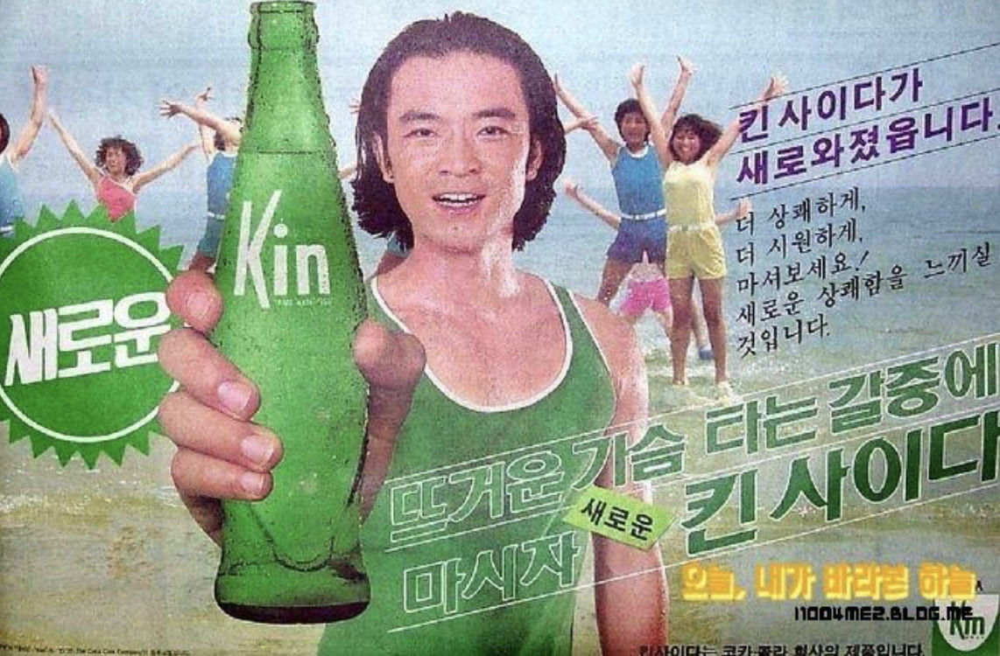

이덕화
킨 사이다가 새로와졌습니다.
더 상쾌하게, 더 시원하게 마셔보세요!
새로운 상쾌함을 느끼실 것입니다.

킨 사이다가 새로와졌습니다.
더 상쾌하게, 더 시원하게 마셔보세요!
새로운 상쾌함을 느끼실 것입니다.
이덕화는 1970년대와 1980년대를 대표하는 대한민국의 배우로, 강인하고 야성적인 이미지로 큰 인기를 얻었다. 청춘스타로 데뷔한 이후 드라마와 영화에서 활약하며 당대 최고의 남성 스타 중 한 명으로 자리매김했다. 특히 거칠지만 따뜻한 매력을 가진 남성상을 연기하며 대중의 사랑을 받았다.
킨사이다는 코카콜라가 판매한 탄산음료로, 시원하고 청량한 맛을 앞세워 소비자들에게 상쾌함을 전달했다. 1980년대 탄산음료 시장에서 경쟁력을 확보하기 위해 인기 연예인을 광고 모델로 기용하며 브랜드 이미지를 강화했다.
광고는 "더 상쾌하게, 더 시원하게"라는 메시지를 통해 제품의 청량감을 강조했다. 당시 대중적 인지도가 높았던 이덕화를 모델로 내세워 제품의 신뢰도와 친근한 이미지를 높였으며, 소비자들에게 새로운 탄산음료의 등장을 효과적으로 알렸다.
1980년대는 텔레비전 광고가 대중문화의 중심 매체로 자리 잡은 시기였다. 기업들은 인기 배우와 가수를 광고 모델로 적극 활용하며 제품의 인지도를 높였고, 광고 속 스타의 이미지는 소비자의 구매 결정에 큰 영향을 미쳤다. 이덕화 역시 당시 다양한 광고에 출연하며 대중적인 영향력을 보여주었다.